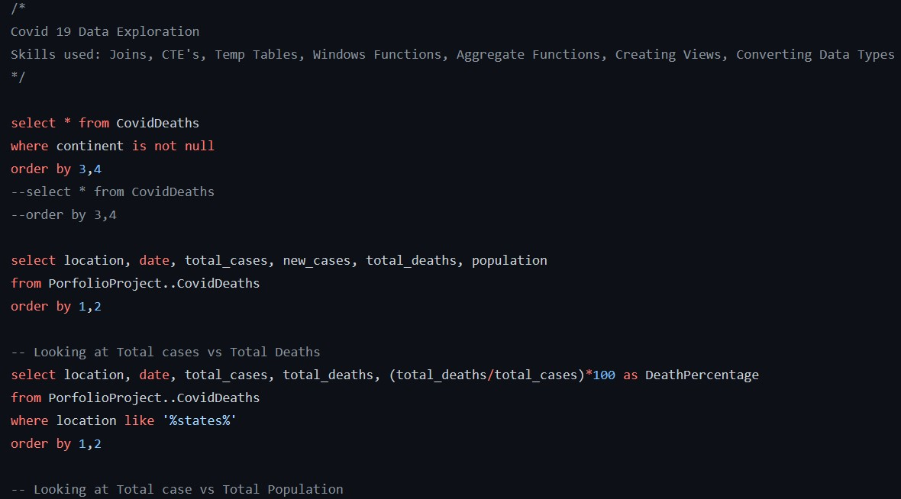
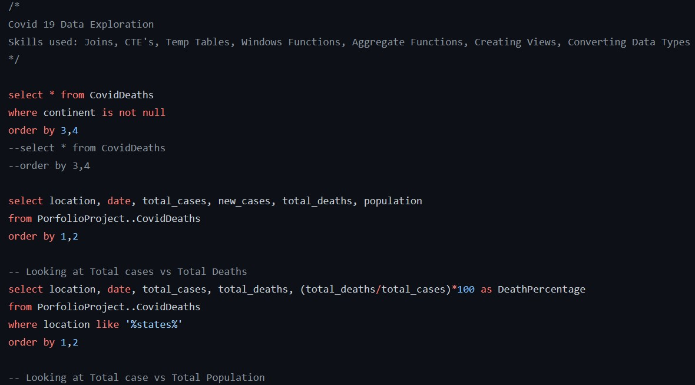
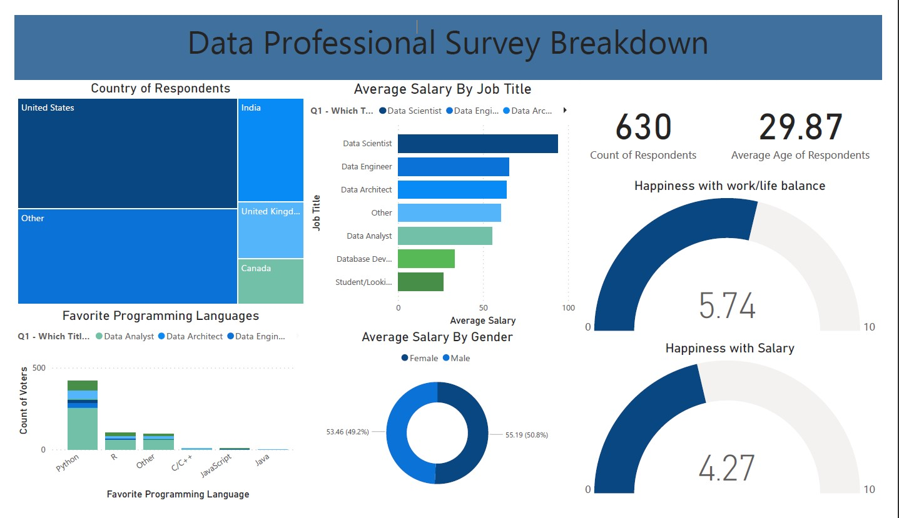
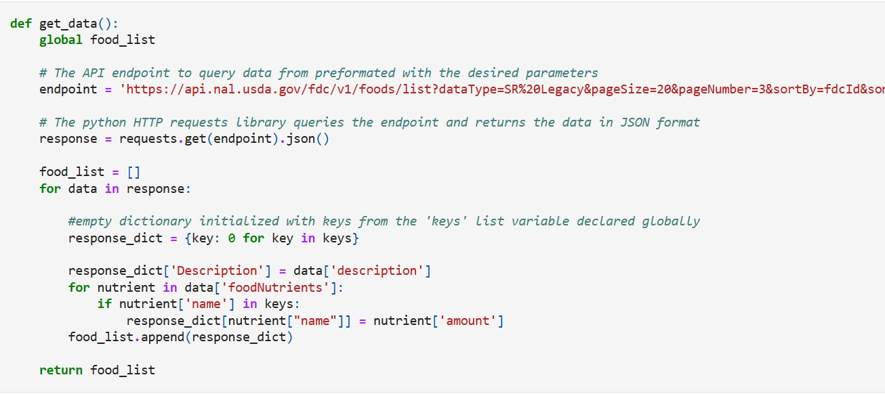

Covid-19 Data Exploration using SQL Server
Some key activites
What percentage of the population got Covid19?
Countries with highest infection rates
Created Temp table
Created Common Table Expression(CTE)
Created view to store data for future visualizations

Data used is from a survey carried on Data Professionals
Some key activites
Data transformation in power query
Promote first row to headers
Split column by delimeter and by character
Remove unused columns
Change data type for some columns
Filter out unrequired data
Load data into Power BI and create visuals

FoodData Central is an integrated data system that provides expanded nutrient profile data and links to related agricultural and experimental research.
This script extracts food data from the SR 'Legacy Foods' category and lists the food, amino acids the food contains and level of amino acid

Tableau Projects on AirBnb Pricing and Video games sales